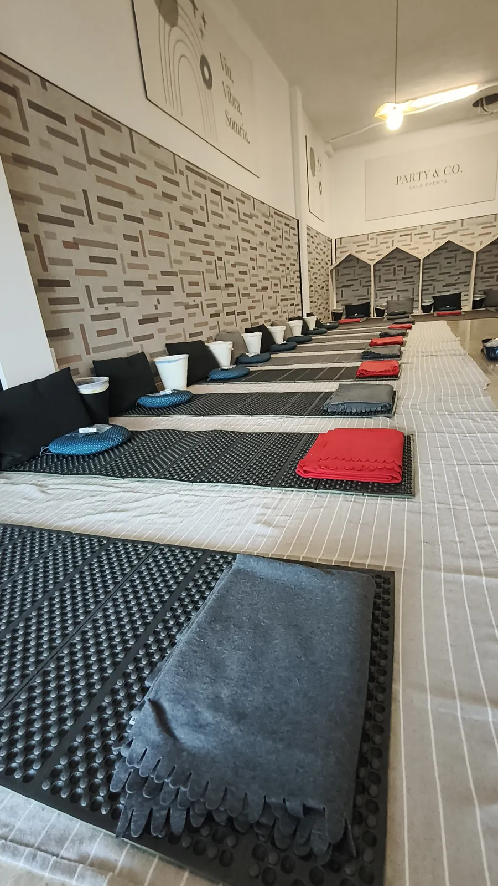
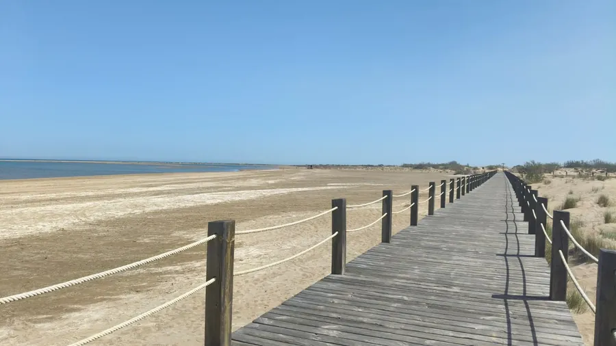

L'ultimo viaggio
dell'ego
El Último Viaje del Ego è lasciare andare l'identità della paura. Quell'identità che non ti lascia essere te stessa.
El Último Viaje del Ego è lasciare andare l'identità della paura. Quell'identità che non ti lascia essere te stessa.
El último viaje del ego ti aiuterà a liberare la mente da auto-giudizi limitanti, che non ti permettono di connetterti al meritevole e di valorizzarti.
Un processo pratico per lasciare andare la paura di sciogliere la tua identità, quell'identità costruita su credenze per ottenere quell'amore che tu non ti dai. Quella vita dalla scarsità. Se mendichi amore non potrai mai essere abbondante.
Il tuo unico proposito nella vita è amarti ed essere felice. Non compiacere gli altri, non vivere per gli altri, non vivere dalla colpa.
L'ego è un conglomerato di paure e di circostanze non sentite che non ti permettono di connetterti e vivere da chi sei. Vivi dall'incoerenza tra chi sei e chi hai sempre preteso di essere.
Eliminare gli ostacoli che impediscono di sperimentare chi sei davvero per essere in pace e conoscerti. Quelle paure sono blocchi che il tuo stesso ego crea e che impediscono alla tua vita di fluire con chiarezza, proposito, serenità, facilità.
El Último Viaje del Ego è un processo pratico per riconoscere e identificare i pattern di identità che condizionano il nostro modo di pensare, sentire e agire. Un cammino per comprendere come si costruiscono, quali bisogni e paure li sostengono e come ci limitano nel modo di vivere e di relazionarci.
Attraverso l'esplorazione dell'identità, della paura, dell'amore, del bisogno, della dipendenza e dell'essenza, apriamo la possibilità di mettere in discussione ciò che abbiamo imparato, lasciare andare gli automatismi e recuperare la libertà di scegliere come vogliamo vivere.
Lo facciamo attraverso ritiri, workshop, terapia e accompagnamento individuale, creando spazi per sperimentare, comprendere e integrare nuovi modi di vivere dal tuo essere.
Non si tratta solo di capire ciò che ti sta succedendo, ma di riconoscere da dove vivi e aprire la possibilità di farlo in un altro modo per poterlo cambiare.
Ritiri ed eventi per tornare a te
 Preiscrizioni aperte
Preiscrizioni aperteIndia: Rishikesh, Gange, Himalaya
Due settimane di cultura, spiritualità, laboratori di crescita personale, yoga e meditazione nel cuore dell'India.
Scopri il ritiro Ritiri ed eventi
Ritiri ed eventiCatalogna e Canarie
Oltre all'India, facciamo ritiri ed eventi in Catalogna e alle Canarie. Scrivici e ti diremo le prossime date.
Scopri dove
OnlineTornare a casa. Il viaggio dell'ego
Uno spazio di esplorazione interiore e di pratica per comprendere più autenticamente chi sei, oltre i tuoi pensieri, le emozioni e le storie.
Vedi il corso Accompagnamento
AccompagnamentoPiante medicinali
Processi terapeutici personalizzati, con preparazione preventiva e integrazione successiva, in uno spazio sicuro e curato.
Scopri di piùStrumenti di esplorazione e trasformazione
Meditazione
Tornare alla presenza e al silenzio interiore.
Respirazione
Per regolare, radicare e liberare.
Movimento
Il corpo come cammino di consapevolezza.
Auto-osservazione
Guardare con onestà ciò che crediamo di essere.
Dinamiche di gruppo
Ascoltarsi negli altri e lasciarsi vedere.
Piante medicinali
Processi terapeutici accompagnati.
Coaching
Chiarezza e direzione, con risorse che restano con te.
Melania Di Vara e Miquel Canut

Melania Di Vara
Formatrice di Yoga, Meditazione e Ayurveda, con oltre 10 anni di esperienza nell'accompagnare percorsi di conoscenza di sé e guarigione emozionale. Guida ritiri e immersioni in India e in Europa.
Conosci Melania
Miquel Canut
Terapeuta e Life Coach con oltre 18 anni di esperienza. Accompagna percorsi di crescita personale e trasformazione interiore, integrando diverse discipline.
Conosci Miquel


Chi ha partecipato alle nostre esperienze
Mi sono unita a un viaggio nel nord dell'India organizzato da Melania. È stata un'esperienza incredibile. Abbiamo visitato diverse città sacre lungo il Gange e nell'ultima settimana abbiamo partecipato al Festival Internazionale dello Yoga a Rishikesh. Tutto era organizzato in modo eccellente: hotel, visite, trasferimenti.
Tutti i ritiri che organizza sono pura alchimia: basta metterci un po' di te e ti assicuro che sono trasformativi e non ti lasciano indifferente. Nel mio caso mi hanno aiutato a liberarmi di molti pesi.
È la mia mentore, un'eccellente insegnante, un'eccellente organizzatrice di eventi e viaggi.
La preparazione con Miquel mi ha aiutato ad arrivare con calma e fiducia. Durante il processo mi sono sentita accompagnata e in uno spazio sicuro, senza fretta. Dopo, l'integrazione mi ha permesso di atterrare ciò che avevo vissuto e di proseguire con più chiarezza.
Testimonianze reali pubblicate su melaniadivara.com (Susana M., J. R., José María G.).
Uno spazio per riconoscere chi sei e vivere da lì
Ritiri, eventi, accompagnamento e processi terapeutici per lasciare andare l'identità della paura e recuperare la libertà di scegliere come vuoi vivere.